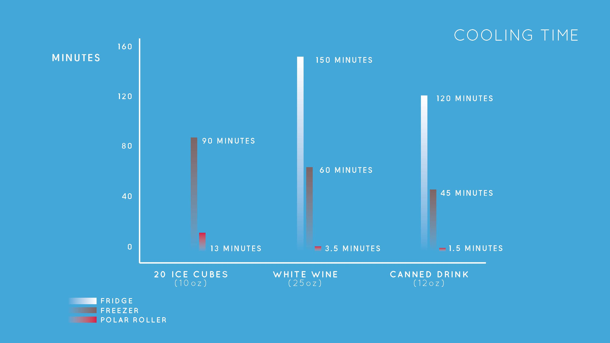

Polar Roller
The in-refrigerator ice maker has been the same for the past few decades Ice is generally available when you need it. Once the storage reservoir is diminished, you may be waiting for another hour and half before a new batch is frozen. This process has remained standard with only incremental improvements through the years. Mabe, the largest Mexican appliance company, challenged us to change this.
What do people use ice for? We found that over 80% of the time, ice is used to cool beverages. Placing ice in a beverage is fine for some people, but many dislikes the fact that it dilutes any non-water beverage, or even its annoyance when trying to drink out of an open cup. This led us to our next fundamental question: Why ice at all? Can we viably bypass it all together?
By performing extensive primary and secondary research, with different types of users and product, we learned that people find making ice to be time consuming. For example, nowadays making a new batch of ice in a freezer means to wait at least 90 minutes.
The main objective of performing experience prototypes is to get the bone of the user need, with these results we could re-think the design questions and determinate the final characteristics that the product must have to create the expected user experience.
The CEP (Critical Experience prototype) means to create a “real experience” to get opinions and information from the users. By creating a “looks like experience” / “wizard Oz prototyping”.

The Pollar Roller has two aims: quickly cool down canned and bottled beverages in cylindrical containers and to freeze water into ice by using the same method, but with the use of a specific cylindrical design container. This is achieved thanks to the use of liquid cooling.

An user-friendly interface was implemented with the implementation of capacitive sensors on a PMMA surface, with an arduino controller capable of activate several internal motors and rollers in order to create the perfect cooling cycle.
This interface was tested for more than 300 people at the Final presentation of the product at Stanford University.